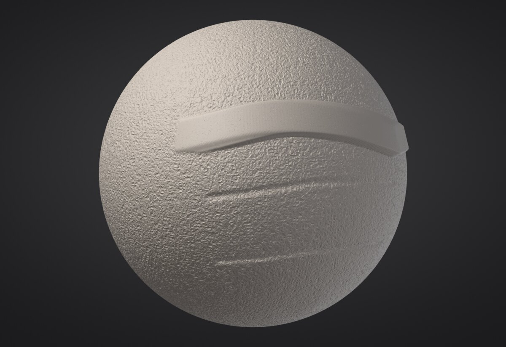

Micro levels: hundreds of millions of polygons
Subdivision levels store every vertex of every level. That is what lets you step down and reshape, but it costs about 90 bytes per triangle: a 300 million triangle model would need 27 GB. Micro levels go past the highest subdivision level without a mesh: each triangle of that level carries a regular grid of heights, one 16-bit number per point, and the micro triangles are worked out on the fly by the brushes and by the graphics card. 300 million micro triangles take about 0.4 GB, sculpt in real time and draw at 60+ frames per second.


Making a micro level#
- Divide the Part to a comfortable highest level (0.3 to 2 million triangles is the sweet spot).
- In Tool > Geometry, set the Micro slider. Each step is four times the triangles: the label shows the total (Micro 4 on a 1.2 million triangle level is 300 million micro triangles).
- Click Divide to Micro. The surface stays exactly as smooth as before; the micro level starts flat on it.
The micro level sits on the highest subdivision level, so step up to it first. While a micro level exists you can't change subdivision levels (Bake it or delete it first).
| Micro level | Micro triangles per triangle | Memory per micro triangle |
|---|---|---|
| 3 | 64 | 1.4 bytes |
| 4 | 256 | 1.2 bytes |
| 5 | 1,024 | 1.1 bytes |
| 6, 7 | 4,096, 16,384 | 1.05 bytes |
For the smoothest view, prefer a higher micro level on fewer base triangles: 300 million as Micro 5 on 300,000 triangles draws faster than Micro 4 on 1.2 million.
Sculpting#
These brushes work on micro levels: Standard, Clay, Clay Block, Smooth, Inflate, Flatten, Trim, Layer, Pinch, Crease, Sharp Crease and Mask (with Ctrl). Symmetry, Falloff, pressure, alphas (Drag Stamp included) and the mask work as usual, and every stroke is one undo step.
- A micro level stores one height per point, so it moves the surface in and out, never sideways. Pinch, Crease and Sharp Crease sharpen the height profile instead of pulling points together (the result looks the same for creases and folds).
- Move reshapes the level below the micro level (the base) and the micro detail rides along on it, in its own frame: drag an ear back without smearing the pores. To move the micro surface itself along its normals, tick Move along normals.
- Big brushes are evaluated on a coarser grid (about 50 points across the brush) and the change is spread smoothly over the points in between, so a brush that covers half the model costs about as much as a small one. The detail under it is kept.
- Brushes that slide the surface (Tendril, Nudge, VDM stamps) and custom recipe brushes don't apply to micro levels; recipe brushes act as Standard.
Vertex Paint, sculpt layers, face group colours and the wireframe aren't shown on micro levels yet.
Baking down and exporting#
-
Bake Micro makes a regular mesh of the micro level in a new Part (the micro level stays).
micro_bake level=3bakes a coarser micro level;replace=truereplaces this Part instead. UVs, face groups, hidden faces and the micro mask carry over. -
Export Displacement writes a 32-bit EXR displacement map over the base UVs (needs UVs) next to the project: the height of the micro surface above the flat base triangles, along the interpolated normal.
micro_export_displacement path=detail.png type=vectorwrites a vector map (object space) or a 16-bit PNG (mid-grey = 0; the message says the scale).
Projects keep micro levels (project format 7; projects without one are still written as format 6, so older versions open them). Untouched areas take almost no room in the file.
Very large levels and laptops#
A micro level larger than the resident cache your hardware profile allows (a quarter of the memory when there is no profile yet) is kept out of core: in a file in the cache folder (~/.cache/sculptforge), of which only the parts you sculpt or look at stay in memory. A billion micro triangles then fit on a 16 GB machine. The status line under the slider says when a level is out of core. SF_MICRO_OUT_OF_CORE=1 forces it (for testing); SF_MICRO_SWAP_DIR picks the folder.
How many triangles a frame draws for micro levels follows the machine: the view lowers the detail of far and small areas until a frame fits the budget (2 million on a laptop profile, 8 million on a workstation).
Scripting#
| Command | What it does |
|---|---|
micro_divide level=4 or micro_divide triangles=300 | Add a micro level (by level, or about this many million micro triangles) |
micro_delete | Remove it (undoable) |
micro_info | Level, micro triangles, memory, displacement range |
micro_bake level=4 replace=false | Bake down to a mesh |
micro_export_displacement path=disp.exr size=4096 type=scalar | Displacement map over the base UVs |
micro_noise amplitude=0.0015 scale=120 | Procedural surface noise over the whole micro level |
sculptforge --bench-micro --bench-sizes 33,100,300 measures memory, brush and frame times on your computer.